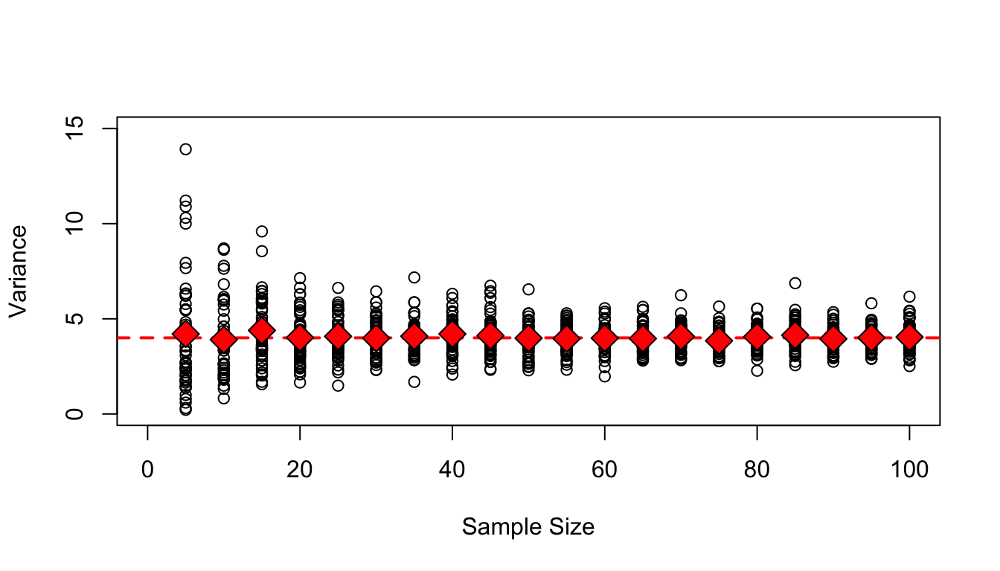
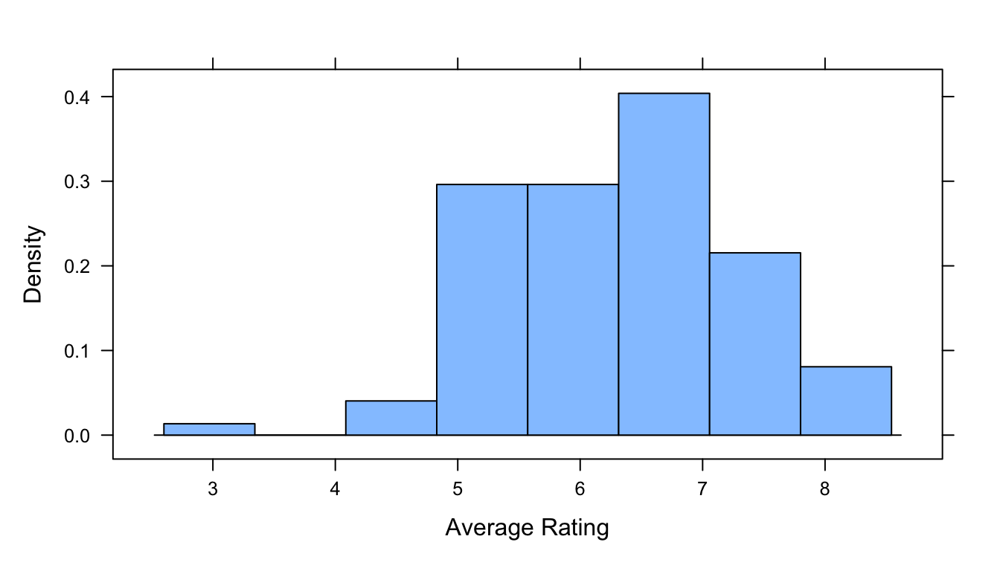

The objective of this module is to review some key terms and ideas that form the foundation of statistics and statistical inference. In particular, this module considers ways for describing distributions of data, particularly measures of central tendency, spread (i.e., variation), and shape in our observations of a variable, which play an important role in both descriptive statistics and in various approaches to statistical hypothesis testing.
Population - all of the elements from a set of data (e.g., all of the gorillas in the world) = N
Sample - one or more observations drawn from a population by some kind of sampling process (e.g., the set of gorillas living in Rwanda, the set of gorilla skeletons found in a museum) = n
NOTE: We often assume that a sampling process is random, but there are lots of ways in which sampling might be biased, thus the samples we work with may not be (and often are not) random samples!
Parameter - a measurable characteristic of a population that summarizes data (e.g., the mean value of the femur length of all gorillas)
NOTE: Population means for a given variable, x, are often indicated as \(\mu_x\)
Statistic - a measurable characteristic about a sample that summarizes data (e.g., the mean femur length of gorilla femurs found at the American Museum of Natural History)
NOTE: Sample means for a given variable, x, are often indicated as \(\bar{x}\)
12.4 Descriptive versus Inferential Statistics
What is the difference between “descriptive” and “inferential” statistics?
12.4.1 Descriptive Statistics
Purpose is to summarize data from a sample using measures (statistics!) such as mean, median, mode, standard deviation, variance, skew, etc.
Used to characterize data distributions and trends, without making predictions about the population from which the sample is drawn
Examples:
Calculating average trait values for a set of subjects (e.g., femur lengths from gorilla skeletons)
Visualizing daily temperature or mean monthly temperatures of over the course of several years to observe trends
12.4.2 Inferential Statistics:
Purpose is to use statistics from sample data to make predictions or inferences about the larger population that sample is presumed to represent
Essential for hypothesis testing and evaluating the probability or likelihood that an observed pattern is genuine or was generated by a particular “model”
Examples:
Estimating the average height for human men in a particular country city by examining a sample group
Using poll results to predict the outcome of an election
TL/DR: Descriptive statistics are used to describe a set of sample data, while inferential statistics are used to try to make predictions and decisions based on those data or to infer something about the “model” that generated those data
Whenever we use statistical methods or attempt statistical inference – whether using a null hypothesis significance testing (NHST) framework or using Bayesian approaches – we are basically trying to estimate and draw conclusions about population-level parameters and processes and their distributions based on observations or measurements we take from a sample. Sometimes, we are simply trying evaluate whether it is reasonable to assume that our sample is drawn from a population with particular characteristics. Other times, we may be trying to understand what variables explain variation we see in a response measure of interest or be trying to evaluate which among a set of alternative models best predicts a given response.
Regardless, though, we should always keep in mind that the process of trying to draw conclusions about a population based on a sample can be complicated by the fact that…
our sample may be biased, non-random, or non-representative in some way
there may be unknown or unobserved variables that impact how the sample is related to the population
the assumptions we make about the population that our sample is drawn from might not be correct
12.5 Describing Sets of Observations
It is important for us to be able to describe the general characteristics of the distribution of a set of observations or measurements about a population or a sample, and we often do this by calculating some measure(s) of central tendency, some measure(s) of spread around that statistic, and some measure of the shape of a distribution. The “five-number summary” that we have talked about previously provides some such statistics.
Measures of Central Tendency
Median - the middle value in a rank ordered series of values
Mean - the sum of measured values divided by \(n\), a.k.a., the average or the arithimetic mean
Mode - the most common measurement of values observed
Harmonic mean - the reciprocal of the average of the reciprocals of a set of values
The measures above are relevant to summarizing observations about processes that are additive.
Geometric mean - a measure of central tendency for processes that are exponential (e.g., some phases of population growth in natural populations) or multiplicative (e.g., increases in area or volume that accompany increases in linear dimension) in nature, rather than additive = the \(n^{th}\) root of the product of the values, taken across a set of \(n\) values; for the mathematically inclined, it also equals the antilog of the averaged log values
CHALLENGE
Given a vector, x <- c(1,2,3,4,5,6,7,8,9,10,25,50,100,200,1000), write your own function to determine the geometric mean of the values in a vector. Remember the general form for functions is: <function name> <- function(<arguments>) {<code>}
HINT: Taking the \(n^{th}\) root of a number is equivalent to raising the number to the power of \(\frac{1}{n}\)
What happens if you have NAs or zeros or negative numbers in your vector?
HINT: Including an na.rm=TRUE argument and the function na.omit() in your function code to ignore data points with values may help you write more generic functions!
Measures of Spread
In addition to measures of central tendency, measures of spread or variability in the distribution of variables of interest are some of the most important summary statistics to calculate. The total range (min to max) is one measure of spread, as is the interquartile range (25th to 75th quartile), which as we have seen are both part of the “five-number summary”.
We more commonly characterize spread, however, in terms of some measure of the deviation of a set of values from the mean of those values. One such measure is the sum of squares…
Sum of Squares = the sum of the squared deviations of a set of values from the mean of that set
NOTE: Why do we use the sum of the squared deviations of values from the mean rather than just the sum of deviations? Because the latter would simply be ZERO!
CHALLENGE
Write a function to calculate the sum of squares for a vector.
# This is equivalent to...sum_of_squares <-function(x) {sum(x^2) -length(x) *mean(x)^2}sum_of_squares(x)
Show Output
## [1] 917183.3
A shortcut to calculate the sum of squares for a vector, x, that does not actually require calculating mean(x) is the (sum of the squared values in the dataset) minus the (square of the summed values) / n, or…
Note that the sum of squares always increases with sample size… you can see this by adding more data points to your vector. Thus, to be able to compare across data sets of different size, we are often more interested in the average deviation of values from the mean rather than the straight sum of squares, i.e., a mean squared deviation.
This is the definition of the variability or variance in a dataset. If we are simply interested in describing the mean squared deviation in a population, where we have a value or measurement for every case (e.g., the femur length of all of the gorillas in a museum population), we could then just divide the sum of squares by the number of cases.
Population Variance (\(\sigma^2\)) = \(\frac{SS}{N}\)
If, however, we have not measured all of the individual cases in population - i.e., if we are, instead, dealing with a sample from the population and are trying to use that sample to say something about the population from which it is drawn (e.g., to say something about gorilla femur lengths in general based on those that appear in a museum sample) - then we need to use a slightly different formula to get an unbiased estimate of the population variance. Such an estimate for a population parameter, based on data from a sample, is calculated as:
Sample Variance (an estimator of the population variance) = \(\frac{SS}{n-1}\)
In this formula, \(n - 1\) is the number of degrees of freedom implied by the sample. The degrees of freedom is the number of values used to calculate a sample statistic that are “free to vary”. For example, we used n observations to calculate the mean of our sample, which implies \(n - 1\) degrees of freedom (i.e., if we know the mean and \(n - 1\) values, then we also know the last value… it is not “free to vary”). We then use that statistic about our sample (i.e., the sample mean) as an estimate of the population mean, which is then used to derive an estimate of the population variance based on the sample variance.
CHALLENGE
Write a function to calculate the variance for a vector of values representing a sample of measurements. Remember this means dividing the sample sum of squares by \(n-1\).
Compare the results of your function to the built-in R function, var(), which calculates sample variance.
Show Code
var(x)
Show Output
## [1] 65513.1
Measures of Shape
Two common measures of the shape of a distribution include its skewness and kurtosis.
Skewness measures the asymmetry of a distribution. Symmetrical distributions have zero skewness. Those with a longer or fatter tail on the right-hand side are called “right-skewed” (and have positive skewness), while those with a longer or fatter tail on the left-hand side are called “left-skewed” (and have negative skewness). One measure of skewness is
\[\frac{\sum\limits_{i=1}^{N}(x_i-\bar{x})^3}{(N-1)\sigma^3}\] … where \(N\) is the number of observations, \(\bar{x}\) is the mean, and \(\sigma\) is the standard deviation. That is, skewness is based on the cube of deviations of each observation from the mean, whereas variance is based on squared deviations from the mean. Generally, a distribution with a skewness value of between -0.5 and +0.5 is not considered to be far from symmetrical.
EXAMPLES
x <-rnorm(1e+05, 0, 1) # draw a random sample from a normal distribution with mean = 0 and stdev = 1hist(x, main ="Normal: Symmetrical", freq =FALSE) # plot as a histogram
x <-rbeta(1e+05, 9, 3) # draw a random sample from a beta distribution with alpha = 9 and beta = 2hist(x, main ="Beta: Left-Skewed", freq =FALSE) # plot as a histogram
Kurtosis measures the peakedness or flatness of a distribution compared to a normal distribution. Distributions with high kurtosis have a sharper peak and fatter tails, while those with low kurtosis have a flatter, wider peak and thinner tails. The formula for kurtosis is…
That is, kurtosis is based on deviations of each observation raised to the fourth power. Data drawn from a normal distribution have an expected kurtosis of three, while those with “negative” kurtosis have a value of greater than three and those with “postive” kurtosis have values of less than three.
x <-rnorm(1e+05, 0, 1) # draw a random sample from a normal distribution with mean = 0 and stdev = 1(kurtosis <-sum((x -mean(x))^4)/((length(x) -1) *sd(x)^4))
## [1] 2.993214
The {moments} package has functions for skewness() and kurtosis().
library(moments)x <-rnorm(1e+05, 0, 1)skewness(x)
## [1] 0.003732058
kurtosis(x)
## [1] 2.982141
detach(package:moments)
Questions to Explore
For a random variable, how is variance related to sample size?
We will explore this, and at the same time practice a bit about loops in R programming, via simulation, where we repeatedly draw samples of random variables from a specific distribution. As an example, we will we draw from a normal distribution with a mean of 10 and a standard deviation of 2.
To visualize this distribution, we can use the plotDist() function from the {mosaic} package…
# `plotDist()` comes from the {mosaic} package and makes it easy to plot a# distribution
In the following code block, we first set up a plot window to hold the results of our simulations and plot a line for the known population variance (i.e., the square of \(\sigma\), the standard deviation). We then use nested for loops to iterate the process of drawing samples of a specific size, \(n\), from the specified distribution. We do this for samples of size \(n\) = 5, 10, 15… up to 100, and we draw out 50 replicates of each sample size. Recall from Module 11 that the structure for for loops is:
for (<index> in <range>){
<code to execute>
}
# set up plot windowplot(c(0, 100), c(0, 15), type ="n", xlab ="Sample Size", ylab ="Variance")# add the population variance (= square of population standard deviation) to# the plotabline(h =4, col ="red", lwd =2, lty =2)# run simulations and add results to plotmu <-10sigma <-2# samples of 5, 10, 15...for (n inseq(from =5, to =100, by =5)) {# set up a variable, reps, to hold the set of variances calculated for each# replicate reps <-vector("double", 50)# 50 replicatesfor (i in1:50) { x <-rnorm(n, mean = mu, sd = sigma)points(n, var(x)) reps[[i]] =var(x)# this is a common programming motif in R and is more memory and time# efficient than another common motif, `reps <- c(reps, var(x))` }points(n, mean(reps), bg ="red", pch =23, cex =2) # plots average}

How does sample variance compare to population variance? What happens to the sample variances as sample size increases?
Another measure of spread around a mean that we often see reported is the standard deviation. The standard deviation is simply the square root of the variance (\(\sqrt{\sigma^2} = \sigma\)). The advantage of using the standard deviation as a statistic or parameter is that the units of standard deviation are the same as the units of our original measurement (rather than being units squared, which are our units for variance).
In R we can write…
x <-rnorm(1000, mean =10, sd =2)pop_sd <-function(x) {sqrt(pop_var(x))}pop_sd(x)
The sdpop() function from the {radiant} package can be used to calculate the standard deviation for a completely sampled population.
library(radiant)sdpop(x)
## [1] 1.957185
detach(package:radiant)
The built-in R function sd() can be used to calculate the standard deviation of a sample.
sd(x)
## [1] 1.958164
12.6 Using Measures of Spread
Sampling Distributions
Since one of the goals of statistics is to estimate and make inferences about population-level parameters based on characteristics of a sample, it is important that we be able to judge and report just how reliable or unreliable our statistical estimates those population-level parameters are.
To explore how we do this, let’s start with a population where we KNOW every data point. We will use that first to describe our population empirically. We will then draw samples out of that population and see how well that the samples we draw can be used to describe the population.
Load the “IMDB-movies.csv” dataset from the ada-datasets repository on GitHub as a “tibble”, d. This dataset contains data on close to 29,000 movies scraped in early 2020 from the online Internet Movie Database, including their year of title, director, year of production, running time, average viewer rating on a 10 point scale, and the number of votes that rating is based on. [Note that in collating this data, I excluded movies with fewer than 1000 votes.] Once we load the data, we will filter the dataset to keep only movies with a startYear from 1999 to 2019, which should leave us with 17,628 movies. We are going to use this dataset as our POPULATION.
f <-"https://raw.githubusercontent.com/difiore/ada-datasets/main/IMDB-movies.csv"d <-read_csv(f, col_names =TRUE)d <-filter(d, startYear %in%1999:2019) # the %in% operator is VERY useful!head(d)
## # A tibble: 6 × 10
## tconst titleType primaryTitle startYear runtimeMinutes genres averageRating
## <chr> <chr> <chr> <dbl> <dbl> <chr> <dbl>
## 1 tt0035423 movie Kate & Leop… 2001 118 Comed… 6.4
## 2 tt0069049 movie The Other S… 2018 122 Drama 6.8
## 3 tt0111068 movie Sangharsh 1999 127 Actio… 6.8
## 4 tt0112444 movie My Teacher'… 1999 89 Comed… 5.5
## 5 tt0113026 movie The Fantast… 2000 86 Music… 5.6
## 6 tt0118589 movie Glitter 2001 104 Drama… 2.2
## # ℹ 3 more variables: numVotes <dbl>, nconst <chr>, director <chr>
First, we will do some exploratory data analysis on this dataset using, in part, some functions from the {mosaic} package. {mosaic} makes some kinds of quick exploratory data analysis very fast and easy to do (though we already know how to do lots of what we can do with {mosaic} in other ways)!
Functions in the {mosaic} package have a data= argument as well as a ~ argument that specifies which variable of interest from the data= argument the function is to be applied to.
# the `histogram()` function from {mosaic} plots neat 'augmented' histogramshistogram(~averageRating, data = d, xlab ="Average Rating")
# the `favstats()` function from {mosiac} calculates a variant of the 5-number# summary(pop_stats <-favstats(~averageRating, data = d))
## min Q1 median Q3 max mean sd n missing
## 1 5.6 6.4 7.1 9.9 6.238972 1.160221 17628 0
Now, let’s draw a single SAMPLE of 100 movies randomly from this population and visualize its average viewer rating. After setting the random number seed (analogous to setting what position we start at in a traditional table of random numbers), run the subsequent lines of code several times and look at how the results differ…
NOTE: We use set.seed() here so that each time this function is run, it returns the same sequence of random numbers until the seed is reset.
set.seed(1)
n <-100s <-sample_n(d, size = n, replace =FALSE)# `sample_n()` from {dplyr} selects rows at random from a data frame it's# another SUPER useful functiontable(s$startYear)
histogram(~averageRating, data = s, xlab ="Average Rating")

(samp_stats <-favstats(~averageRating, data = s))
## min Q1 median Q3 max mean sd n missing
## 3.3 5.5 6.45 7 8.5 6.325 1.004673 100 0
Note that each time we select a sample and calculate summary statistics, such as the mean and standard deviation of a sample, we get slightly different results. If we repeat this sampling process multiple times, we can use the results to generate a distribution for a particular summary statistic of interest, e.g., for the mean or the median. This process generates what is called a sampling distribution for the statistic.
The code below allows us to generate a sampling distribution virtually. The do() * construction from {mosaic}, in combination with one of the {mosaic} package’s aggregating functions (e.g., mean(), median(), etc.), can be used to repeat sampling from the population a user-specified number of times, calculate a summary statistic, and then bundle the results into a vector all in the same line. [Of course, we could also write a loop to do the same thing… and there are other ways we could do this as well (see examples below).]
This process of simulating samples drawn from a population and then generating statistics on the basis of each of our virtual samples is a very powerful tool that we will apply over and over again as we talk about statistical inference. This process is the basis for bootstrapping confidence intervals (see Module 14) and for conducting randomization/permutation tests (see Module 16).
Using the {mosaic} Package
# using `do(reps) *` from {mosaic} to generate a sampling distributionreps <-1000samp_dist_mean <-do(reps) *mean(~averageRating, data =sample_n(d, size = n, replace =FALSE))# generates a sampling distributionmean_plot <-histogram(~mean, data = samp_dist_mean, xlab ="Sampling Distribution for the\nMean of Average Rating")samp_dist_median <-do(reps) *median(~averageRating, data =sample_n(d, size = n,replace =FALSE))# generates a sampling distributionmedian_plot <-histogram(~median, data = samp_dist_median, xlab ="Sampling Distribution for the\nMedian of Average Rating")
Using the {purrr} Package
library(purrr)# using `map()` from {purrr} to generate a sampling distributionsamp_dist_mean_alt1 <-map(1:reps, ~mean(~averageRating, data =sample_n(d, size = n,replace =FALSE))) |>unlist()mean_plot_alt1 <-histogram(samp_dist_mean_alt1, xlab ="Sampling Distribution for the\nMean of Average Rating")detach(package:purrr)
Using the {infer} Package
# using `rep_sample_n()` from {infer} to generate a sampling distributionlibrary(infer)samp_dist_mean_alt2 <- d |>rep_sample_n(size = n, reps = reps, replace =FALSE) |>group_by(replicate) |>summarize(mean =mean(averageRating)) |>pull(mean)detach(package:infer)mean_plot_alt2 <-histogram(samp_dist_mean_alt2, xlab ="Sampling Distribution for the\nMean of Average Rating")
IMPORTANT NOTE: The histograms we plot in the code above are for sampling distributions of the statistics in question. They do not represent the distribution of values in any particular sample! This is SUPER IMPORTANT to recognize and keep in mind.
The mean of the sampling distribution (i.e., the mean of \(\bar{x}\)) for a particular statistic should be a really good point estimate of the population value for that statistic (i.e., \(\mu\)). Compare the following to confirm this:
mean(~mean, data = samp_dist_mean)
## [1] 6.239391
# this is the estimated population mean calculated as the mean of the sampling# distribution of sample meanspop_stats$mean # true population mean
## [1] 6.238972
mean(~median, data = samp_dist_median)
## [1] 6.38125
# this is the estimated population median calculated as the mean of the# sampling distribution of sample medianspop_stats$median # true population median
## [1] 6.4
Standard Errors
So, just how reliable or unreliable are these estimates of a population parameter based on the mean of the sampling distribution for a statistic of interest? That is, how far off is a statistic that we calculate based on a sampling distribution likely to be from the true POPULATION value of the parameter of interest?
One way to quantify the uncertainty is by calculating the variability of the summary statistic of interest across replicate samples drawn from the population. For example, we could calculate the variance of the sampling distribution. More commonly, because variance is expressed in units squared, we take the square root of this variance to calculate the standard deviation of the sampling distribution and thus express our uncertainly in units of the original measurement. Formally, this value is referred to as the standard error (SE) of measurement for any given summary statistic of interest. [Typically, that statistic is the mean, and we thus are often calculating the standard error of the mean.]
The SE is, in effect, the average deviation between statistic values calculated from different and incomplete sets of samples drawn from a population and the average statistic value calculated across that set of samples (which should converge on the true population value for that statistic). The SE of the mean is thus a measure of how dispersed sample means (\(\bar{x}\)) are expected to be around the estimated population mean (\(\mu\)) (i.e., how far off from the true population mean an estimate based on a sample of size \(n\) is likely to be). Similarly, the SE of the median would be a measure of how dispersed sample medians are expected to be, on average, around the estimated population median, and so forth.
Estimating a SE from a Sampling Distribution
To estimate the SE from a sampling distribution, we simply take the standard standard deviation of the set of values comprising that distribution. Above, we used the do() * <function> construction to generate sampling distributions for the mean and median of average viewer ratings in the “movies.csv” dataset, so all we need to do is pull out the standard deviation of those distributions to estimate the standard error.
se_mean <-favstats(~mean, data = samp_dist_mean)$sd# or, se_mean <- sd(samp_dist_mean$mean)(paste0("Estimated population mean = ", round(favstats(~mean, data = samp_dist_mean)$mean,3), " ± ", round(se_mean, 3), " SE based on ", reps, " samples of size ", n))
## [1] "Estimated population mean = 6.239 ± 0.121 SE based on 1000 samples of size 100"
se_median <-favstats(~median, data = samp_dist_median)$sd# or, se_median <- sd(samp_dist_median$median)(paste0("Estimated population median = ", round(favstats(~median, data = samp_dist_median)$mean,3), " ± ", round(se_median, 3), " SE based on ", reps, " samples of size ", n))
## [1] "Estimated population median = 6.381 ± 0.134 SE based on 1000 samples of size 100"
As we might expect for any measure of uncertainty or error, the SE [1] increases with the variability in a sample (i.e., estimates based on high-variability samples should be more uncertain) and [2] decreases with the size of the sample (i.e., estimates based on larger samples should be less uncertain). The SE thus reflects a ratio of variance to sample size.
Questions to Explore
How does changing the size of our samples (n) impact the mean and SE of our estimate of the population parameter?
How does changing the number of replicate samples (reps) impact the mean and SE of our estimate of the population parameter?
We can explore these two questions with the following code… note that we just take one set of 2000 replicates and then resample from that set randomly to explore the impact of different, smaller numbers of replicates:
Notice that as the number of replicates increases, our estimates of both the mean and SE become less variable, while as the sample size increases, our SE decreases (and our estimate of the mean thus becomes less uncertain), regardless of number of replicates.
Calculating SEs from the Population Variance
Note that above, we estimated the SE by taking the standard deviation of a sampling distribution, where we derived that distribution by taking multiple samples from a perfectly known population. However, if we know the actual population variance (\(\sigma^2\)) or population standard deviation (\(\sigma\)), which we do in this case, we can actually calculate the expected SE for samples of a given size directly, without basing that on an empirical sampling distribution that we have derived from repeated sampling. This is because, mathematically, the variance of a fully realized sampling distribution (i.e., of taking all possible samples of size \(n\) from a population) is equal to the variance of the population divided by the sample size. The square root of the variance of the sampling distribution is the standard deviation, i.e., the standard error.
where \(\sigma^2\) is the population variance (and \(\sigma\) is thus the population standard deviation) and \(n\) is the sample size.
We can compare the SEs for different sample sizes estimated above from our empirical sampling distributions with the SEs calculated directly from the population variance using the code below.
# select estimated SEs for different sample sizes with 1000 reps from our# output tibblesampling_output <-filter(output, reps ==1000) |>select(n, samp_dist_se)# create a tibble of SEs based on the known population variancepop_output <-tibble(n =numeric(), pop_se =numeric())for (n inseq(from =10, to =200, by =10)) { pop_se <-sqrt(pop_var(d$averageRating)/n) pop_output <-bind_rows(pop_output, c(n = n, pop_se = pop_se))}(compare <-inner_join(sampling_output, pop_output, by ="n"))
# the sample_dist_se and pop_se columns should be very close in value!
Estimating SEs from a Single Sample
Of course, in practice we often do not know the true population variance or standard deviation, nor do we have the opportunity to generate a sampling distribution empirically and then use this to estimate the SE. Instead, we collect typically just collect a single sample from a population about which we know very little.
In these cases, we use some statistic about our single sample as a point estimate for the parameter value in our population (e.g., \(\bar{x}\) for \(\mu\)), and we use the variance or standard deviation and size of that single sample to estimate the SE around that point estimate for our statistic of interest: i.e., square root of (sample variance / sample size) or sample standard deviation / (square root of sample size)
where \(s^2\) is the sample variance and \(s\) is the sample standard deviation.
CHALLENGE
Write your own function to calculate the standard error of the mean for a vector of values representing a single sample of observations from a population. You can use either your own function for the sample variance that you created above or the built-in var() function. There are, of course, several ways you could do this. Then, use your new function with summarize() and sample_n() to extract a single sample of size “n=100” from d and calculate an estimate of the population SE for that sample size.
\(\sigma^2, s^2\) = population variance, sample variance
\(\sigma, s\) = population standard deviation, sample standard deviation
\(s\) is an estimator for \(\sigma\)
Sample variance and standard deviation: var(), sd()
These are measures of the variation/spread in a sample
Sampling distributions and standard errors
Mean of the sampling distribution of \(\bar{x}\) is an estimate of \(\mu\)
Standard deviation of the sampling distribution of \(\bar{x}\) = \(\frac{\sigma}{\sqrt{n}}\) = standard error
This is a measure of the variation/spread in a sample statistic
Standard errors: sciplot::se()
Using the sample_n() function from {dplyr} and do() * <function> construction from {mosaic} to generate sampling distributions
Source Code
# Introduction to Statistics and Sampling {#module-12}## Objectives> The objective of this module is to review some key terms and ideas that form the foundation of statistics and statistical inference. In particular, this module considers ways for describing distributions of data, particularly measures of *central tendency*, *spread* (i.e., variation), and *shape* in our observations of a variable, which play an important role in both descriptive statistics and in various approaches to statistical hypothesis testing.## Preliminaries- Install these packages in ***R***: [{mosiac}](https://cran.r-project.org/web/packages/mosaic/mosaic), [{radiant}](https://cran.r-project.org/web/packages/radiant/radiant.pdf),[{moments}](https://cran.r-project.org/web/packages/moments/moments.pdf),[{sciplot}](https://cran.r-project.org/web/packages/sciplot/sciplot.pdf), [{infer}](https://cran.r-project.org/web/packages/infer/infer.pdf)- Load {tidyverse}```{r}#| include: false#| message: falselibrary(tidyverse)```## Important Terms- **Population** - **all** of the elements from a set of data (e.g., all of the gorillas in the world) = ***N***- **Sample** - one or more observations drawn from a population by some kind of sampling process (e.g., the set of gorillas living in Rwanda, the set of gorilla skeletons found in a museum) = ***n***> **NOTE:** We often assume that a sampling process is *random*, but there are lots of ways in which sampling might be biased, thus the samples we work with *may not* be (and often *are not*) random samples!- **Parameter** - a measurable characteristic of a population that summarizes data (e.g., the mean value of the femur length of all gorillas)> **NOTE:** Population means for a given variable, **x**, are often indicated as $\mu_x$- **Statistic** - a measurable characteristic about a sample that summarizes data (e.g., the mean femur length of gorilla femurs found at the American Museum of Natural History)> **NOTE:** Sample means for a given variable, **x**, are often indicated as $\bar{x}$## Descriptive versus Inferential StatisticsWhat is the difference between "descriptive" and "inferential" statistics?### Descriptive Statistics- Purpose is to **summarize data from a sample** using measures (*statistics*!) such as mean, median, mode, standard deviation, variance, skew, etc.- Used to characterize data distributions and trends, without making predictions about the population from which the sample is drawn- Examples: - Calculating average trait values for a set of subjects (e.g., femur lengths from gorilla skeletons) - Visualizing daily temperature or mean monthly temperatures of over the course of several years to observe trends### Inferential Statistics:- Purpose is to use statistics from sample data **to make predictions or inferences** about the larger population that sample is presumed to represent- Essential for hypothesis testing and evaluating the probability or likelihood that an observed pattern is genuine or was generated by a particular "model"- Examples: - Estimating the average height for human men in a particular country city by examining a sample group - Using poll results to predict the outcome of an election> **TL/DR**: Descriptive statistics are used to describe a set of sample data, while inferential statistics are used to try to make predictions and decisions based on those data or to infer something about the "model" that generated those dataWhenever we use statistical methods or attempt statistical inference -- whether using a *null hypothesis significance testing* (*NHST*) framework or using *Bayesian* approaches -- we are basically trying to estimate and draw conclusions about population-level parameters and processes and their distributions based on observations or measurements we take from a *sample*. Sometimes, we are simply trying evaluate whether it is reasonable to assume that our sample is drawn from a population with particular characteristics. Other times, we may be trying to understand what variables explain variation we see in a response measure of interest or be trying to evaluate which among a set of alternative models best predicts a given response.Regardless, though, we should always keep in mind that the process of trying to draw conclusions about a population based on a sample can be complicated by the fact that...- our sample may be biased, non-random, or non-representative in some way- there may be unknown or unobserved variables that impact how the sample is related to the population- the assumptions we make about the population that our sample is drawn from might not be correct## Describing Sets of ObservationsIt is important for us to be able to describe the general characteristics of the distribution of a set of observations or measurements about a **population** or a **sample**, and we often do this by calculating some *measure(s) of central tendency*, some *measure(s) of spread* around that statistic, and some measure of the *shape* of a distribution. The "five-number summary" that we have talked about previously provides some such statistics. ### Measures of Central Tendency {.unnumbered}- **Median** - the middle value in a rank ordered series of values- **Mean** - the sum of measured values divided by $n$, a.k.a., the *average* or the *arithimetic mean*- **Mode** - the most common measurement of values observed- **Harmonic mean** - the reciprocal of the average of the reciprocals of a set of valuesThe measures above are relevant to summarizing observations about processes that are additive.- **Geometric mean** - a measure of central tendency for processes that are exponential (e.g., some phases of population growth in natural populations) or multiplicative (e.g., increases in area or volume that accompany increases in linear dimension) in nature, rather than additive = the $n^{th}$ root of the product of the values, taken across a set of $n$ values; for the mathematically inclined, it also equals the *antilog* of the averaged *log* values### CHALLENGE {.unnumbered}- Given a vector, `x <- c(1,2,3,4,5,6,7,8,9,10,25,50,100,200,1000)`, write your own function to determine the *geometric mean* of the values in a vector. Remember the general form for functions is: `<function name> <- function(<arguments>) {<code>}`> **HINT:** Taking the $n^{th}$ root of a number is equivalent to raising the number to the power of $\frac{1}{n}$```{r}#| code-fold: true#| code-summary: "Show Code"#| attr.output: '.details summary="Show Output"'x <-c(1,2,3,4,5,6,7,8,9,10,25,50,100,200,1000)geometric_mean <-function(x){prod(x)^(1/length(x))}geometric_mean(x)geometric_mean <-function(x){exp(mean(log(x)))}geometric_mean(x)```What happens if you have `NA`s or zeros or negative numbers in your vector?> **HINT:** Including an `na.rm=TRUE` argument and the function `na.omit()` in your function code to ignore data points with <NA> values may help you write more generic functions!### Measures of Spread {.unnumbered}In addition to measures of central tendency, measures of spread or variability in the distribution of variables of interest are some of the most important summary statistics to calculate. The *total range* (min to max) is one measure of spread, as is the *interquartile* range (25th to 75th quartile), which as we have seen are both part of the "five-number summary".We more commonly characterize spread, however, in terms of some measure of the *deviation of a set of values from the mean of those values*. One such measure is the **sum of squares**...- ***Sum of Squares*** = the sum of the squared deviations of a set of values from the mean of that set> **NOTE:** Why do we use the sum of the **squared** deviations of values from the mean rather than just the sum of deviations? Because the latter would simply be ZERO!### CHALLENGE {.unnumbered}- Write a function to calculate the **sum of squares** for a vector.```{r}#| code-fold: true#| code-summary: "Show Code"#| attr.output: '.details summary="Show Output"'sum_of_squares <-function(x){sum((x-mean(x))^2)}sum_of_squares(x)#This is equivalent to...sum_of_squares <-function(x){sum(x^2) -length(x)*mean(x)^2}sum_of_squares(x)```A shortcut to calculate the **sum of squares** for a vector, **x**, that does not actually require calculating `mean(x)` is the *(sum of the squared values in the dataset) minus the (square of the summed values) / n*, or...$$\sum\limits_{i=1}^{k}(x^2) - \frac{(\sum\limits_{i=1}^{k} x)^2}{n}$$Thus, another formula for the **sum of squares** is the following:```{r}sum_of_squares <-function(x){sum(x^2) - (sum(x))^2/length(x)}sum_of_squares(x)```Note that the **sum of squares** always increases with sample size... you can see this by adding more data points to your vector. Thus, to be able to compare across data sets of different size, we are often more interested in the *average* deviation of values from the mean rather than the straight sum of squares, i.e., a **mean squared deviation**.This is the definition of the variability or **variance** in a dataset. If we are simply interested in describing the mean squared deviation in a *population*, where we have a value or measurement for every case (e.g., the femur length of all of the gorillas in a museum *population*), we could then just divide the **sum of squares** by the number of cases.- ***Population Variance*** ($\sigma^2$) = $\frac{SS}{N}$In ***R*** parlance, we can write this as:```{r}pop_var <-function(x){sum((x-mean(x))^2)/(length(x))}pop_var(x)```If, however, we have not measured all of the individual cases in population - i.e., if we are, instead, dealing with a *sample* from the population and are trying to use that sample to say something about the population from which it is drawn (e.g., to say something about gorilla femur lengths in general based on those that appear in a museum *sample*) - then we need to use a slightly different formula to get an unbiased estimate of the population variance. Such an estimate for a population parameter, based on data from a sample, is calculated as:- ***Sample Variance*** (an *estimator* of the population variance) = $\frac{SS}{n-1}$In this formula, $n - 1$ is the number of *degrees of freedom* implied by the sample. The *degrees of freedom* is the number of values used to calculate a sample statistic that are "free to vary". For example, we used *n* observations to calculate the mean of our sample, which implies $n - 1$ degrees of freedom (i.e., if we know the mean and $n - 1$ values, then we also know the last value... it is *not* "free to vary"). We then use that statistic about our sample (i.e., the sample mean) as an estimate of the population mean, which is then used to derive an estimate of the population variance based on the sample variance.### CHALLENGE {.unnumbered}- Write a function to calculate the **variance** for a vector of values representing a *sample* of measurements. Remember this means dividing the sample sum of squares by $n-1$.```{r}#| code-fold: true#| code-summary: "Show Code"#| attr.output: '.details summary="Show Output"'sample_var <-function (x){sum((x-mean(x))^2)/(length(x)-1)}sample_var(x)```Compare the results of your function to the built-in ***R*** function, `var()`, which calculates sample variance.```{r}#| code-fold: true#| code-summary: "Show Code"#| attr.output: '.details summary="Show Output"'var(x)```### Measures of Shape {.unnumbered}Two common measures of the **shape** of a distribution include its **skewness** and **kurtosis**.**Skewness** measures the asymmetry of a distribution. Symmetrical distributions have zero skewness. Those with a longer or fatter tail on the right-hand side are called "right-skewed" (and have positive skewness), while those with a longer or fatter tail on the left-hand side are called "left-skewed" (and have negative skewness). One measure of skewness is$$\frac{\sum\limits_{i=1}^{N}(x_i-\bar{x})^3}{(N-1)\sigma^3}$$... where $N$ is the number of observations, $\bar{x}$ is the mean, and $\sigma$ is the standard deviation. That is, skewness is based on the cube of deviations of each observation from the mean, whereas variance is based on squared deviations from the mean. Generally, a distribution with a skewness value of between -0.5 and +0.5 is not considered to be far from symmetrical.EXAMPLES```{r}x <-rnorm(100000, 0, 1) # draw a random sample from a normal distribution with mean = 0 and stdev = 1hist(x, main ="Normal: Symmetrical", freq =FALSE) # plot as a histogram(skewness <-sum((x-mean(x))^3)/((length(x)-1)*sd(x)^3))x <-rbeta(100000, 9, 3) # draw a random sample from a beta distribution with alpha = 9 and beta = 2hist(x, main ="Beta: Left-Skewed", freq =FALSE) # plot as a histogram(skewness <-sum((x-mean(x))^3)/((length(x)-1)*sd(x)^3))```**Kurtosis** measures the peakedness or flatness of a distribution compared to a normal distribution. Distributions with high kurtosis have a sharper peak and fatter tails, while those with low kurtosis have a flatter, wider peak and thinner tails. The formula for kurtosis is...$$\frac{\sum\limits_{i=1}^{N}(x_i-\bar{x})^4}{(N-1)\sigma^4}$$That is, kurtosis is based on deviations of each observation raised to the fourth power. Data drawn from a normal distribution have an expected kurtosis of three, while those with "negative" kurtosis have a value of greater than three and those with "postive" kurtosis have values of less than three.```{r}x <-rnorm(100000, 0, 1) # draw a random sample from a normal distribution with mean = 0 and stdev = 1(kurtosis <-sum((x-mean(x))^4)/((length(x)-1)*sd(x)^4))```The {moments} package has functions for `skewness()` and `kurtosis()`.```{r}library(moments)x <-rnorm(100000, 0, 1)skewness(x)kurtosis(x)detach(package:moments)```### Questions to Explore {.unnumbered}- For a random variable, how is variance related to sample size?We will explore this, and at the same time practice a bit about **loops** in ***R*** programming, via **simulation**, where we repeatedly draw samples of random variables from a specific distribution. As an example, we will we draw from a normal distribution with a mean of 10 and a standard deviation of 2.To visualize this distribution, we can use the `plotDist()` function from the {mosaic} package...```{r}#| message: false#| fig-height: 3library(mosaic)mu <-10sigma <-2plotDist("norm", mean=mu, sd=sigma, xlab="x", ylab="Frequency")# `plotDist()` comes from the {mosaic} package and makes it easy to plot a distribution```In the following code block, we first set up a plot window to hold the results of our simulations and plot a line for the known population variance (i.e., the square of $\sigma$, the standard deviation). We then use nested `for` loops to iterate the process of drawing samples of a specific size, $n$, from the specified distribution. We do this for samples of size $n$ = 5, 10, 15... up to 100, and we draw out 50 replicates of each sample size. Recall from [**Module 11**](#module-11) that the structure for `for` loops is:````for (<index> in <range>){ <code to execute>}```````{r}#| fig-height: 4# set up plot windowplot(c(0, 100),c(0, 15),type ="n",xlab ="Sample Size",ylab ="Variance")# add the population variance (= square of population standard deviation) to the plotabline(h =4,col ="red",lwd =2,lty =2)# run simulations and add results to plotmu <-10sigma <-2# samples of 5, 10, 15...for (n inseq(from =5, to =100, by =5)) {# set up a variable, reps, to hold the set of variances calculated for each replicate reps <-vector("double", 50)# 50 replicatesfor (i in1:50) { x <-rnorm(n, mean = mu, sd = sigma)points(n, var(x)) reps[[i]] =var(x)# this is a common programming motif in R and is more memory and time efficient than another common motif, `reps <- c(reps, var(x))` }points(n,mean(reps),bg ="red",pch =23,cex =2) # plots average}```- How does *sample variance* compare to *population variance*? What happens to the sample variances as sample size increases?Another measure of spread around a mean that we often see reported is the **standard deviation**. The standard deviation is simply the *square root of the variance* ($\sqrt{\sigma^2} = \sigma$). The advantage of using the standard deviation as a statistic or parameter is that the units of standard deviation are the same as the units of our original measurement (rather than being units squared, which are our units for variance).In ***R*** we can write...```{r}x <-rnorm(1000, mean =10, sd =2)pop_sd <-function(x){sqrt(pop_var(x))}pop_sd(x)sample_sd <-function(x){sqrt(sample_var(x))}sample_sd(x)```The `sdpop()` function from the {radiant} package can be used to calculate the standard deviation for a completely sampled population.```{r}#| message: falselibrary(radiant)sdpop(x)detach(package:radiant)```The built-in ***R*** function `sd()` can be used to calculate the standard deviation of a sample.```{r}sd(x)```## Using Measures of Spread### Sampling Distributions {.unnumbered}Since one of the goals of statistics is to estimate and make inferences about population-level parameters based on characteristics of a sample, it is important that we be able to judge and report just how reliable or unreliable our statistical estimates those population-level parameters are.To explore how we do this, let's start with a population where we KNOW every data point. We will use that first to describe our population empirically. We will then draw samples out of that population and see how well that the samples we draw can be used to describe the population.Load the "IMDB-movies.csv" dataset from the **ada-datasets** repository on ***GitHub*** as a "tibble", **d**. This dataset contains data on close to 29,000 movies scraped in early 2020 from the online [Internet Movie Database](https://www.imdb.com/interfaces/), including their year of title, director, year of production, running time, average viewer rating on a 10 point scale, and the number of votes that rating is based on. [Note that in collating this data, I excluded movies with fewer than 1000 votes.] Once we load the data, we will filter the dataset to keep only movies with a `startYear` from 1999 to 2019, which should leave us with 17,628 movies. We are going to use this dataset as our POPULATION.```{r}#| message: falsef <-"https://raw.githubusercontent.com/difiore/ada-datasets/main/IMDB-movies.csv"d <-read_csv(f, col_names =TRUE)d <-filter(d, startYear %in%1999:2019) # the %in% operator is VERY useful!head(d)```First, we will do some exploratory data analysis on this dataset using, in part, some functions from the {mosaic} package. {mosaic} makes some kinds of quick exploratory data analysis very fast and easy to do (though we already know how to do lots of what we can do with {mosaic} in other ways)!Functions in the {mosaic} package have a `data=` argument as well as a `~` argument that specifies which variable of interest from the `data=` argument the function is to be applied to.```{r}#| message: false#| fig-height: 4boxplot(averageRating ~ startYear, data=d, xlab="Year", ylab="Average Rating")# the `histogram()` function from {mosaic} plots neat "augmented" histogramshistogram(~ averageRating, data=d, xlab="Average Rating")# the `favstats()` function from {mosiac} calculates a variant of the 5-number summary(pop_stats <-favstats(~ averageRating, data = d))```Now, let's draw a single SAMPLE of 100 movies randomly from this population and visualize its average viewer rating. After setting the random number seed (analogous to setting what position we start at in a traditional table of random numbers), run the subsequent lines of code several times and look at how the results differ...> **NOTE:** We use `set.seed()` here so that each time this function is run, it returns the same sequence of random numbers until the seed is reset.```{r}set.seed(1)``````{r}#| message: false#| fig-height: 4n <-100s <-sample_n(d, size=n, replace=FALSE)# `sample_n()` from {dplyr} selects rows at random from a data frame# it's another SUPER useful functiontable(s$startYear)boxplot(averageRating ~ startYear, data=s, xlab="Year", ylab="Average Rating")histogram(~ averageRating, data=s, xlab="Average Rating")(samp_stats <-favstats(~ averageRating, data = s))```Note that each time we select a sample and calculate summary statistics, such as the mean and standard deviation of a sample, we get slightly different results. If we repeat this sampling process multiple times, we can use the results to generate a **distribution** for a particular summary statistic of interest, e.g., for the mean or the median. This process generates what is called a **sampling distribution** for the statistic.The code below allows us to generate a sampling distribution virtually. The `do() *` construction from {mosaic}, in combination with one of the {mosaic} package's aggregating functions (e.g., `mean()`, `median()`, etc.), can be used to repeat sampling from the population a user-specified number of times, calculate a summary statistic, and then bundle the results into a vector all in the same line. [Of course, we could also write a loop to do the same thing... and there are other ways we could do this as well (see examples below).]This process of *simulating* samples drawn from a population and then generating statistics on the basis of each of our virtual samples is a very powerful tool that we will apply over and over again as we talk about statistical inference. This process is the basis for bootstrapping confidence intervals (see [**Module 14**](#module-14)) and for conducting randomization/permutation tests (see [**Module 16**](#module-16)).#### Using the {mosaic} Package {.unnumbered}```{r}#| message: false# using `do(reps) *` from {mosaic} to generate a sampling distributionreps <-1000samp_dist_mean <-do(reps) *mean(~ averageRating, data=sample_n(d, size = n, replace =FALSE))# generates a sampling distributionmean_plot <-histogram( ~ mean, data = samp_dist_mean,xlab ="Sampling Distribution for the\nMean of Average Rating")samp_dist_median <-do(reps) *median( ~ averageRating, data =sample_n(d, size=n, replace=FALSE))# generates a sampling distributionmedian_plot <-histogram(~ median, data=samp_dist_median,xlab ="Sampling Distribution for the\nMedian of Average Rating")```#### Using the {purrr} Package {.unnumbered}```{r}library(purrr)# using `map()` from {purrr} to generate a sampling distributionsamp_dist_mean_alt1 <-map(1:reps, ~mean( ~ averageRating, data =sample_n(d, size = n, replace =FALSE))) |>unlist()mean_plot_alt1 <-histogram(samp_dist_mean_alt1, xlab ="Sampling Distribution for the\nMean of Average Rating")detach(package:purrr)```#### Using the {infer} Package {.unnumbered}```{r}#| message: false# using `rep_sample_n()` from {infer} to generate a sampling distributionlibrary(infer)samp_dist_mean_alt2 <- d |>rep_sample_n(size = n, reps = reps, replace =FALSE) |>group_by(replicate) |>summarize(mean =mean(averageRating)) |>pull(mean)detach(package:infer)mean_plot_alt2 <-histogram(samp_dist_mean_alt2,xlab ="Sampling Distribution for the\nMean of Average Rating")``````{r}#| message: false#| fig-height: 4library(cowplot)plot_grid(mean_plot, median_plot, ncol=2)detach(package:cowplot)```> **IMPORTANT NOTE:** The histograms we plot in the code above are for **sampling distributions** of the statistics in question. They do not represent the distribution of values in any particular sample! This is SUPER IMPORTANT to recognize and keep in mind.The **mean of the sampling distribution** (i.e., the mean of $\bar{x}$) for a particular statistic should be a really good **point estimate** of the population value for that statistic (i.e., $\mu$). Compare the following to confirm this:```{r}#| message: falsemean( ~ mean, data = samp_dist_mean)# this is the estimated population mean calculated as the mean of the sampling distribution of sample meanspop_stats$mean # true population meanmean( ~ median, data = samp_dist_median)# this is the estimated population median calculated as the mean of the sampling distribution of sample medianspop_stats$median # true population median```### Standard Errors {.unnumbered}So, just how reliable or unreliable are these estimates of a population parameter based on the mean of the sampling distribution for a statistic of interest? That is, how far off is a statistic that we calculate based on a sampling distribution likely to be from the true POPULATION value of the parameter of interest?One way to quantify the uncertainty is by calculating the variability of the summary statistic of interest across replicate samples drawn from the population. For example, we could calculate the *variance of the sampling distribution*. More commonly, because variance is expressed in *units squared*, we take the square root of this variance to calculate the *standard deviation of the sampling distribution* and thus express our uncertainly in *units* of the original measurement. Formally, this value is referred to as the **standard error** (**SE**) of measurement for any given summary statistic of interest. [Typically, that statistic is the *mean*, and we thus are often calculating the *standard error of the mean*.]The **SE** is, in effect, the *average deviation* between statistic values calculated from different and incomplete sets of samples drawn from a population and the average statistic value calculated across that set of samples (which should converge on the true population value for that statistic). The SE of the mean is thus a measure of *how dispersed sample means (*$\bar{x}$) are expected to be around the estimated population mean ($\mu$) (i.e., how far off from the true population mean an estimate based on a sample of size $n$ is likely to be). Similarly, the SE of the median would be a measure of how dispersed sample medians are expected to be, on average, around the estimated population median, and so forth.#### Estimating a SE from a Sampling Distribution {.unnumbered}To estimate the SE from a sampling distribution, we simply take the standard standard deviation of the set of values comprising that distribution. Above, we used the `do() * <function>` construction to generate sampling distributions for the mean and median of average viewer ratings in the "movies.csv" dataset, so all we need to do is pull out the standard deviation of those distributions to estimate the standard error.```{r}#| message: falsese_mean <-favstats(~ mean, data=samp_dist_mean)$sd# or, se_mean <- sd(samp_dist_mean$mean)(paste0( "Estimated population mean = ",round(favstats(~ mean, data=samp_dist_mean)$mean,3)," ± ", round(se_mean,3)," SE based on ", reps, " samples of size ", n))se_median <-favstats(~ median, data=samp_dist_median)$sd# or, se_median <- sd(samp_dist_median$median)(paste0( "Estimated population median = ",round(favstats(~ median, data=samp_dist_median)$mean, 3)," ± ", round(se_median,3)," SE based on ", reps, " samples of size ", n))```As we might expect for any measure of uncertainty or error, the **SE** [1] increases with the variability in a sample (i.e., estimates based on high-variability samples should be more uncertain) and [2] decreases with the size of the sample (i.e., estimates based on larger samples should be less uncertain). The **SE** thus reflects a ratio of variance to sample size.### Questions to Explore {.unnumbered}- How does changing the **size of our samples** (**n**) impact the **mean** and **SE** of our estimate of the population parameter?- How does changing the **number of replicate samples** (**reps**) impact the **mean** and **SE** of our estimate of the population parameter?We can explore these two questions with the following code... note that we just take one set of 2000 replicates and then resample from that set randomly to explore the impact of different, smaller numbers of replicates:```{r}#| message: falsereps <-2000s <-tibble("n"=numeric(),"mean"=numeric(),".index"=numeric())for (n inseq(from =20, to =200, by =20)) { samp_dist <- {do(reps) *sample_n(d, size = n, replace =FALSE) } |>group_by(.index) |> dplyr::summarise(mean =mean(averageRating)) |>mutate(n = n) s <-bind_rows(s, samp_dist)}output <-tibble("n"=numeric(),"reps"=numeric(),"samp_dist_mean"=numeric(),"samp_dist_se"=numeric())for (reps inc(10, 25, 50, 100, 250, 500, 1000, 2000)) { subsample <- s |>group_by(n) |>sample_n(reps, replace =FALSE) |> dplyr::summarise(samp_dist_mean =mean(mean),samp_dist_se =sd(mean)) |>mutate(reps = reps) output <-bind_rows(output, subsample)}``````{r}p1 <-ggplot(data = output, aes(x = n, y = samp_dist_mean)) +geom_line() +facet_grid( ~ reps) +xlab("Sample Size") +ylab("Mean") +ylim(6.0, 6.5)p2 <-ggplot(data = output, aes(x = n, y = samp_dist_se)) +geom_line() +facet_grid( ~ reps) +xlab("Sample Size") +ylab("SE") +ylim(0, 0.5)p3 <-ggplot(data = output, aes(x = n)) +geom_line(aes(y = samp_dist_mean + samp_dist_se), color ="blue") +geom_line(aes(y = samp_dist_mean)) +geom_line(aes(y = samp_dist_mean - samp_dist_se), color ="blue") +facet_grid(~ reps) +xlab("Sample Size") +ylab("Mean ± SE") +ylim(5.8, 6.7)``````{r}#| message: false#| fig-height: 5library(cowplot)plot_grid(p1, p2, p3, nrow=3)detach(package:cowplot)```Notice that as the number of replicates increases, our estimates of both the mean and SE become less variable, while as the sample size increases, our SE decreases (and our estimate of the mean thus becomes less uncertain), regardless of number of replicates.#### Calculating SEs from the Population Variance {.unnumbered}Note that above, we estimated the **SE** by taking the standard deviation of a sampling distribution, where we derived that distribution by taking multiple samples from a perfectly known population. However, if we know the actual population variance ($\sigma^2$) or population standard deviation ($\sigma$), which we do in this case, we can actually calculate the expected **SE** for samples of a given size *directly*, without basing that on an empirical sampling distribution that we have derived from repeated sampling. This is because, mathematically, the variance of a fully realized sampling distribution (i.e., of taking all possible samples of size $n$ from a population) is equal to the variance of the population divided by the sample size. The square root of the variance of the sampling distribution is the standard deviation, i.e., the standard error.$$SE = \sqrt{\frac{\sigma^2}{n}} = \frac{\sigma}{\sqrt{n}}$$where $\sigma^2$ is the population variance (and $\sigma$ is thus the population standard deviation) and $n$ is the sample size.We can compare the SEs for different sample sizes estimated above from our empirical sampling distributions with the SEs calculated directly from the population variance using the code below.```{r}# select estimated SEs for different sample sizes with 1000 reps from our output tibblesampling_output <-filter(output, reps ==1000) |>select(n, samp_dist_se)# create a tibble of SEs based on the known population variancepop_output <-tibble("n"=numeric(), "pop_se"=numeric())for (n inseq(from =10, to =200, by =10)) { pop_se <-sqrt(pop_var(d$averageRating) / n) pop_output <-bind_rows(pop_output, c(n = n, pop_se = pop_se))}(compare <-inner_join(sampling_output, pop_output, by ="n"))# the sample_dist_se and pop_se columns should be very close in value!```#### Estimating SEs from a Single Sample {.unnumbered}Of course, in practice we often do not know the true population variance or standard deviation, nor do we have the opportunity to generate a sampling distribution empirically and then use this to estimate the **SE**. Instead, we collect typically just collect a single sample from a population about which we know very little.In these cases, we use some statistic about our single sample as a **point estimate** for the parameter value in our population (e.g., $\bar{x}$ for $\mu$), and we use the variance or standard deviation and size of that single sample to estimate the **SE** around that point estimate for our statistic of interest: i.e., **square root of (sample variance / sample size)** or **sample standard deviation / (square root of sample size)**$$SE = \sqrt{\frac{s^2}{n}} = \frac{s}{\sqrt{n}}$$where $s^2$ is the sample variance and $s$ is the sample standard deviation.### CHALLENGE {.unnumbered}- Write your own function to calculate the **standard error of the mean** for a vector of values representing a single sample of observations from a population. You can use either your own function for the sample variance that you created above or the built-in `var()` function. There are, of course, several ways you could do this. Then, use your new function with `summarize()` and `sample_n()` to extract a single sample of size "n=100" from **d** and calculate an estimate of the population SE for that sample size.```{r}#| code-fold: true#| code-summary: "Show Code"#| attr.output: '.details summary="Show Output"'n <-100set.seed(100)my_se1 <-function(x) {sqrt(sample_var(x) /length(x))}my_se2 <-function(x) {sqrt(var(x) /length(x))}my_se3 <-function(x) {sd(x) /sqrt(length(x))}new_sample <-sample_n(d, size = n)summarize( new_sample,se1 =my_se1(averageRating),se2 =my_se2(averageRating),se3 =my_se3(averageRating))```The package {sciplot} includes the function, `se()`, for calculating standard errors (as do others).```{r}#| message: falselibrary(sciplot)summarize(new_sample,se4 = sciplot::se(averageRating))detach(package:sciplot)``````{r}#| include: falsedetach(package:mosaic)```---## Concept Review {.unnumbered}- $\mu, \bar{x}$ = population mean, sample mean - $\bar{x}$ is an estimator for $\mu$- $\sigma^2, s^2$ = population variance, sample variance- $\sigma, s$ = population standard deviation, sample standard deviation - $s$ is an estimator for $\sigma$- Sample variance and standard deviation: `var()`, `sd()` - These are measures of the variation/spread in a **sample**- Sampling distributions and standard errors - Mean of the sampling distribution of $\bar{x}$ is an estimate of $\mu$ - Standard deviation of the sampling distribution of $\bar{x}$ = $\frac{\sigma}{\sqrt{n}}$ = standard error - This is a measure of the variation/spread in a **sample statistic** - Standard errors: `sciplot::se()`- Using the `sample_n()` function from {dplyr} and `do() * <function>` construction from {mosaic} to generate sampling distributions